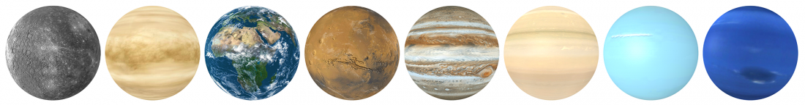

Le terme de planète n'est pas clairement définit car il recoupe différentes réalités en fonction de ce que l'on prend en compte. Il existe une définition officielle de ce que l'on appelle planète dans le système solaire et une définition pour les exoplanètes, c'est à dire des planètes qui tournent autour d'autres étoiles que le Soleil.
Intuitivement, une planète est un corps de forme sphérique en orbite autour d'une étoile. Cette définition fonctionne pour de nombreux objets de taille modeste mais il existe des objets très massifs qui ne sont pas tout à fait des étoiles mais qui ne sont pas non plus assimilables à l'idée que l'on se fait d'une planète : les super-Jupiter ou naines brunes, des objets faisant plusieurs fois la masse de Jupiter. On a donc définit une limite supérieure à ce que peut être une planète en précisant qu'une planète est un corps qui n'a pas entamé de fusion du deutérium en son sein. Si c'est le cas, on parle de naine brune. La limite entre une planète très massive et une naine brune est donc relativement ténue.